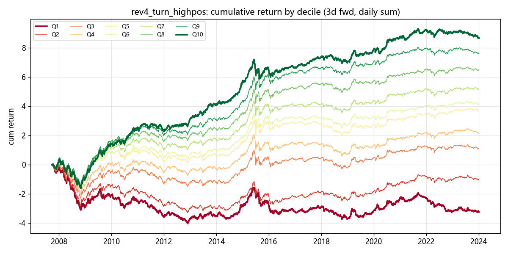
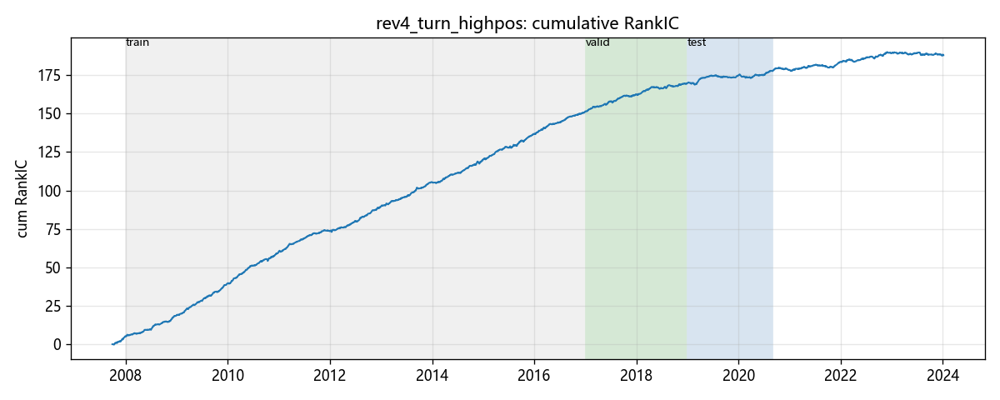
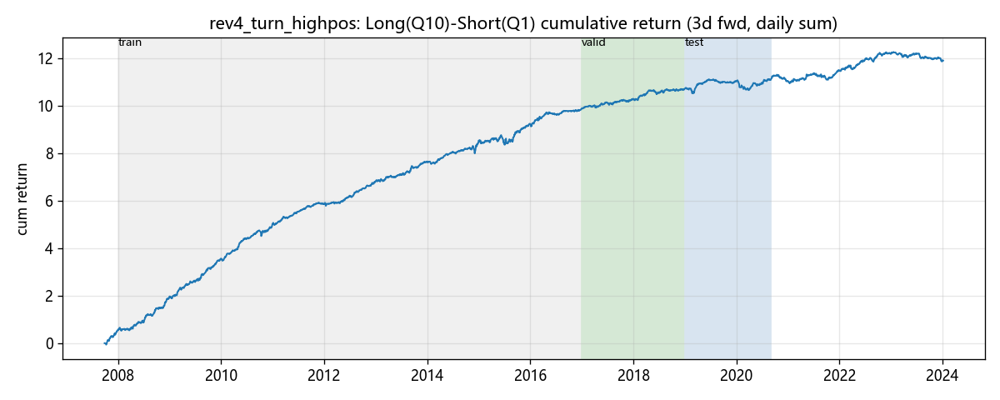
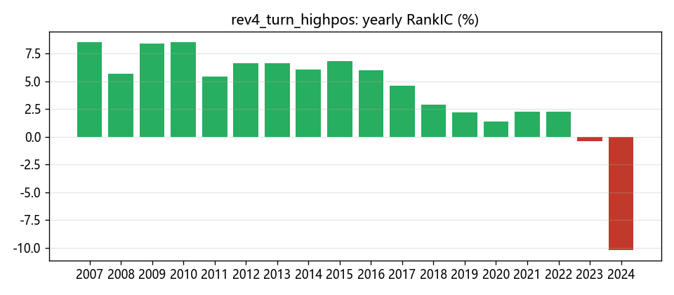
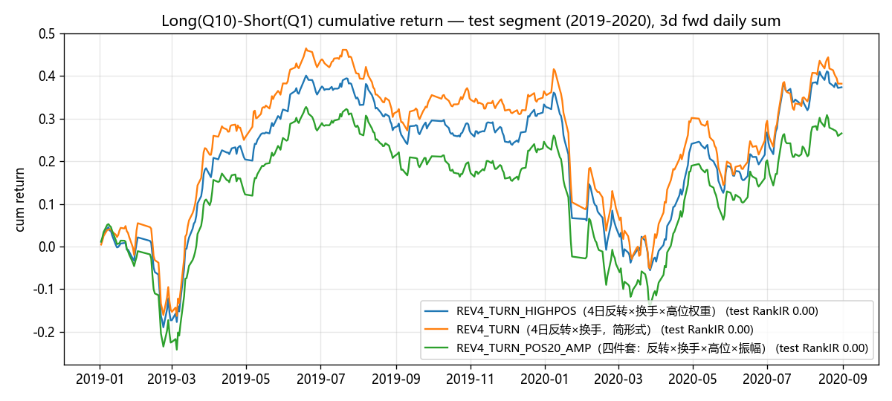
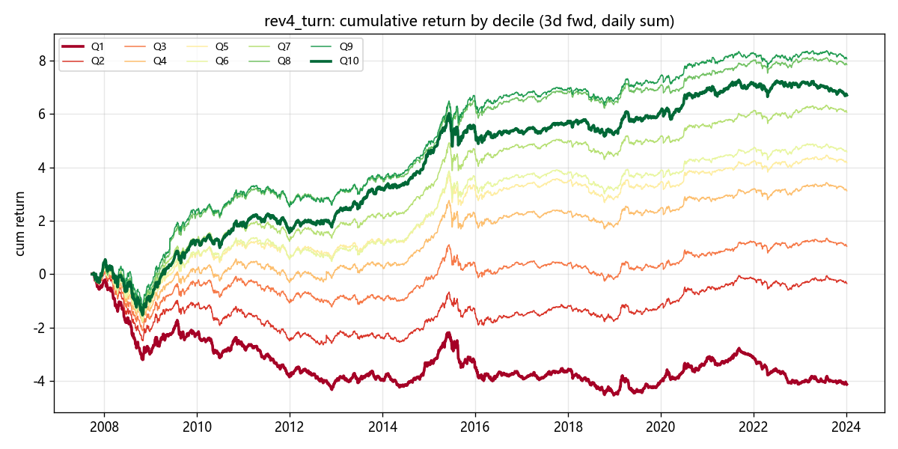
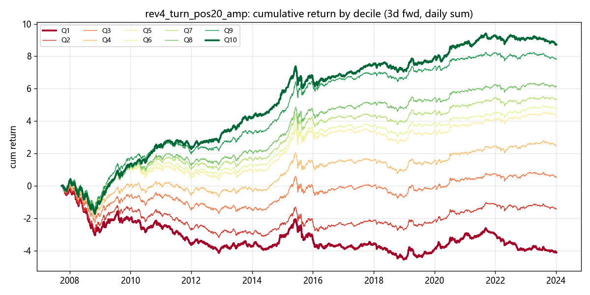

AI生成
第五方向因子挖掘研究报告 —— 位置加权的换手反转：结构发现与验证记录
在量价共振、反转、动量证伪、跳空四个方向之后，本轮把探索的镜头从「涨跌方向」转向 「价格在自身近期轨迹中的位置」与「波动状态」。位置调制提升了反转信号的排序能力 （valid RankIR 0.284，分组完美单调）；test 段 RankIR 为 0.154，分年 RankIC 在 2023–2024 走弱。本报告记录结构发现、验证过程与量化结果，供课程学习与后续研究参考。
前四方向挖掘沉淀了两条稳定的结构经验与一条证伪结论：其一，A 股 T+3 视界上的短线收益以 反转为主导（裸动量在 24 个候选上全面失败）；其二，反转信号需要乘法器提纯， 其中换手率乘法器跨族有效，振幅乘法器不跨族。跳空方向进一步揭示：反转信息几乎全部活在 日内成分，隔夜成分豁免。
那么，反转强度本身是否受某些状态变量调制？本轮提出 VOLPOS 假设：股票在自身近期 高低区间中的位置，以及其波动/振幅状态，会系统性放大或抑制反转效应。 经济直觉有两条支线——
这与跳空族（隔夜信息）机制正交，也与单纯的动量/反转方向探索不同：我们不再问「涨了会 继续涨还是跌」，而是问「在什么位置、什么波动状态下，反转更强」。
沿用第五方向起全套升级的验证设计（协议文件 runs/volpos_protocol.md 事前声明），
分段与 GAP 族一致：
| 段 | 区间 | 天数 | 角色 |
|---|---|---|---|
| train | 2008-01 → 2016-12 | 2190 | 信号存在性 |
| valid | 2017-01 → 2018-12 | 487 | 排序选择（唯一决策依据之一） |
| test | 2019-01 → 2020-08 | 405 | 挖掘期隐藏，终局只观察一次 |
| lockbox | 2020-09 → 2023-12 | — | 留存决策冻结后才展示 |
rev4_turn_pos（低位加权）0.214；amp5_rev5、
rev5_hivol、rev5_highpos 均在 0.18–0.19 附近徘徊。
rev4_turn（−Δ₄×换手）valid
0.239；更关键的是位置符号翻转：低位加权 0.214 < 不加权 0.239 <
高位/远离低点加权 0.270。这与 R1 的 rev5_highpos（0.185）方向一致。
highpos 与 highpos_r2 逐位一致（0.486 / 0.284）；
四件套 +amp20 推至 0.309 为全方向最高；拆解验证
rev4_highpos（无换手）0.248、turn_highpos（无反转）−0.087
——乘法三元结构缺一不可。
读法：因子值高 = 最近 4 日显著下跌 × 换手活跃 × 身处 20 日区间高位。 这类股票被预期在随后 T+1→T+3 出现更强反弹。三个组成部分各司其职—— 反转提供方向，换手提供注意力/流动性筛选，位置提供「情绪退潮」的状态确认。
| 因子 | train | valid | test | test LS Sharpe | 定位 |
|---|---|---|---|---|---|
| REV4_TURN_HIGHPOS | +0.486 | +0.284 | +0.154 | 0.91 | 主推 |
| REV4_TURN（简形式） | +0.399 | +0.239 | +0.170 | 0.87 | 简形式对照 |
| REV4_TURN_POS20_AMP | +0.491 | +0.309 | +0.156 | 0.65 | 四件套观察 |
REV_TRIPLE = −Δ₄ × cs_rank(turnover) × amp5 是本方向的最近亲——
差别仅在第三项（振幅 → 位置）。二者属同源信号族，合并持仓前必须做截面正交性核算
（日均 Spearman），避免双重计算同一份反转暴露。
下面四组图形依次回答：分组是否单调？IC 是否稳定累积？多空净值的累积形态如何？ 分年信号的时间分布怎样？——这四个问题，恰好对应绩效分析的四张基础表。







| 因子 | train→valid | valid→test | test LS Sharpe | 2024 RankIC |
|---|---|---|---|---|
| REV4_TURN_HIGHPOS | 0.486 → 0.284（−42%） | 0.284 → 0.154（−46%） | 0.91 | −0.102 |
| REV4_TURN | 0.399 → 0.239（−40%） | 0.239 → 0.170（−29%） | 0.87 | −0.069 |
| REV4_TURN_POS20_AMP | 0.491 → 0.309（−37%） | 0.309 → 0.156（−50%） | 0.65 | −0.025 |
三个因子的 test RankIR 分别为 0.154 / 0.170 / 0.156（噪声锚点参考值 0.19）。分年表显示 RankIC 在 2007–2016 年间稳定于 0.05–0.09 区间，2017 年后逐年走低，2023–2024 处于低位或 负值区间。该时间分布在前序 REV / GAP 方向亦有同构表现，可作为反转类信号拥挤度随时间变化 的一个观测点。课程作业定位下，此处作为研究记录保留。
| 因子 | 多头日均换手 | 年化拖累（单边 0.1%） | 扣费前多空年化 | 扣费后多空年化 |
|---|---|---|---|---|
| REV4_TURN_HIGHPOS | 67.7% | ≈33.1% | +73.3% | +40.3% |
| REV4_TURN | 61.3% | ≈29.9% | +66.7% | +36.8% |
| REV4_TURN_POS20_AMP | 66.0% | ≈32.2% | +79.2% | +47.0% |
三个因子多头换手均在 60% 量级以上（67.7% / 61.3% / 66.0%）。按单边 0.1% 口径估算， 扣费后多空年化分别为 +40.3% / +36.8% / +47.0%。IC / RankIR 类指标与扣费后组合收益 是两个口径，报告中并列展示以便对照。
| 方向 | 主推结构 | valid | test | 状态 |
|---|---|---|---|---|
| VP 量价共振 | PV_ANTI_TRIPLE（−corr×换手×振幅） | 0.51 | 0.28 | 五方向中 test 读数最高 |
| REV 反转 | REV_TRIPLE（−Δ₄×换手×振幅） | 0.48 | 0.21 | 2023–24 转负 |
| MOM 动量 | （证伪）→ 回到 PV 族 | — | — | 裸动量 24 候选全负 |
| GAP 跳空 | GAP_DIFF4_TURN（隔夜−日内×换手） | 0.29 | 0.20 | 2023 归零 2024 转负 |
| VOLPOS 波动位置 | REV4_TURN_HIGHPOS（−Δ₄×换手×高位） | 0.28 | 0.15 | 2024 分年 RankIC −0.102 |
一、位置是反转的调制器，不是独立信号。裸位置（pos20/60）、裸波动（vol20）、 裸振幅（amp1/5）在 valid 段均无独立 alpha。只有与「反转×换手」相乘，位置信息才兑现为 排序能力的提升（0.239 → 0.284）。这与「裸动量证伪」共同支持一个更一般的命题： 在 T+3 视界上，A 股的可预测性存在于方向×状态的交互项，而非任何一阶矩。
二、符号是高位而非低位。低位加权（1−pos20）使 valid 从 0.239 掉到 0.214， 高位加权升至 0.284。机制上，「高位高换手下跌」更接近情绪退潮后的反弹， 而「低位下跌」更多是基本面恶化或持续抛压，反弹乏力。这一符号差异是本轮最重要的 结构性发现。
三、时间分布特征。test RankIR 0.154，2024 年分年 RankIC −0.102，与 REV / GAP 方向的 时间形态接近。位置调制在 train/valid 段表现为排序能力的提升；test 与近年的表现提供了 该结构随时间变化的观测样本。五方向对照见上表。
| 路径 | 内容 |
|---|---|
runs/volpos_protocol.md | 事前声明协议（预算/锚点/纪律） |
runs/volpos_round_01..04/ | 每轮 candidates.json / metrics.json / notes.md |
runs/final/factors.json | 留存因子表达式与分段 RankIR |
runs/final/retention.md | 留存决策（三票制，冻结于 final_report 之前） |
runs/final/performance_report.md | 指标表 + 图集（机器生成） |
runs/final/perf_detail.json | 结构化明细（含逐日 IC、分组收益） |
runs/final/charts/*.png | 13 张图（含对比图） |
wiki/code/alpha-mining-demo-notes.md | 五方向综合笔记（知识库沉淀） |
复现环境：VeighNa Studio Python（D:\VeighNa_TradeDesk\abc\python.exe），
依赖 vnpy[alpha]（polars / alphalens-reloaded / pyarrow）。数据为
沪深300 成分日线缓存 runs/cache/base_dataset.pkl（234 MB，267 万行），
价格已按首日收盘归一化。复跑一致性已验证：REV4_TURN_HIGHPOS 两次运行 metrics 逐位一致。